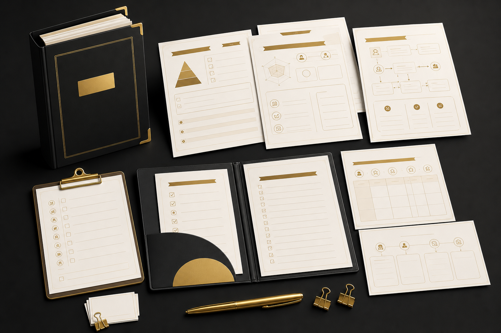
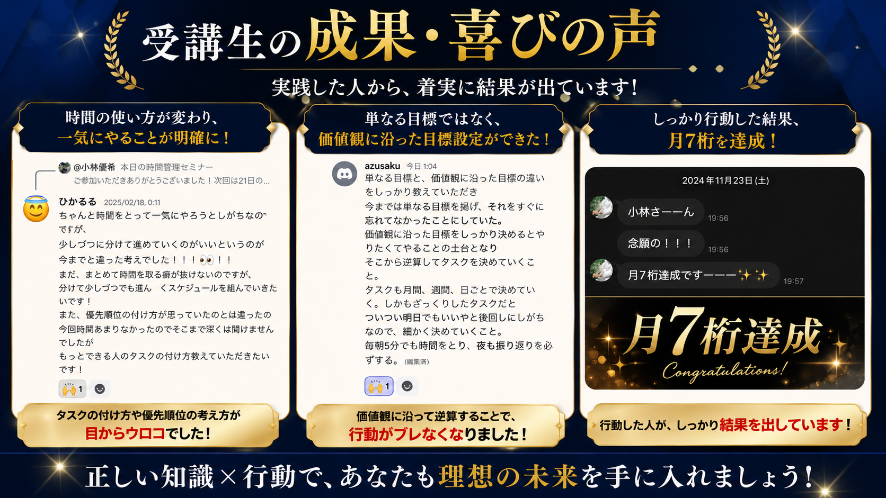
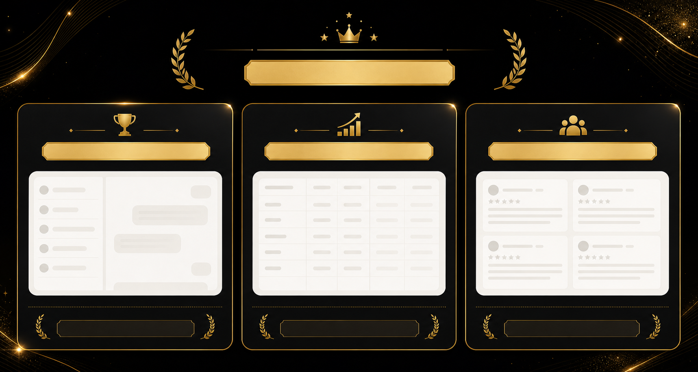

手元に残らない
月3万円の継続サポートを増やしても、思ったほど利益が残らない。
コーチのための高単価商品設計プロデュース
コーチングはできる。目の前の人にも喜ばれている。
それなのに売上が安定しないなら、必要なのはもっと発信することではなく、あなたのコーチングを高単価商品に変える設計です。
売り込みではなく、まずは今の売上が止まっている原因を一緒に整理します。
Problem
セッションでは喜ばれるのに、売上や集客の不安が消えない。そんな状態をひとりで抱えていませんか。
月3万円の継続サポートを増やしても、思ったほど利益が残らない。
SNSを頑張っても、反応だけで個別相談まで進まない。
相手の話は聞けるのに、必要な提案をするところで止まってしまう。
自分の商品に30万円の価値があるのか、正直まだ自信がない。
それは、コーチング力が足りないからではありません。必要なのは、商品設計と相談につながる導線を整えることです。
Future
Concept
コーチングを30万円で選ばれる商品に変え、SNS・LINE・個別相談まで一気通貫で整える伴走型コンサルティングです。
ただ発信テクニックを学ぶのではなく、誰に、何を、どんな順番で届けるのかを一緒に設計します。
Benefit
不安が減り、行動が変わり、コーチングを必要な人に届ける流れが見えるようになります。
誰をどんな未来へ導く商品なのかを言葉にできます。
SNS、LINE、個別相談までの流れが見えるようになります。
無料相談で話を聞くだけで終わらない流れを作ります。
お客様の変化に向き合うサポート設計を整えます。
商品につながる発信テーマが明確になります。
価格ではなく信頼で選ばれるポジションを作ります。
Curriculum
いきなりSNSやクロージングだけを学ぶのではなく、売れる順番で土台から整えます。
商品・集客・販売のどこで止まっているかを見える化します。
単発セッションを、変化まで伴走する商品に再設計します。
「何のコーチ」として選ばれるのかを明確にします。
相談につながる発信テーマと教育の順番を作ります。
出会って終わりにせず、信頼が深まる流れを作ります。
売り込まずに、必要な人へ自然に提案する流れを整えます。
成果と満足度を高め、紹介につながる土台を作ります。
Bonus
実践しながら迷いを減らすためのシート類も用意します。

Voice
実際の口コミ・成果資料は、掲載許可を確認したものから順次追加します。

実践した人から、着実に結果が出ています。

商品設計・導線改善の詳細を掲載予定です。
お客様の声が入ります。
Price
料金は個別プロデュース相談で、現状と必要な支援範囲を確認したうえでご案内します。
すでに商品がある方、導線がない方、個別相談で止まっている方では、必要な支援が変わります。
FAQ
はい。むしろ、その商品を一緒に作るための相談です。今のセッション内容や強みを整理し、商品化できる可能性を見ていきます。
早すぎるとは限りません。すでにお客様に価値提供できているなら、次に必要なのは商品設計と導線かもしれません。
大丈夫です。バズる投稿ではなく、見込み客に信頼される発信軸を作ります。
強引に売ることは前提にしません。相手の課題を整理し、必要な人にだけ提案する流れを作ります。
個別プロデュース相談で、現状と必要な支援範囲を確認したうえでご案内します。
Apply
30万円で選ばれる商品にするなら、何を変えるべきか。商品・発信・導線・個別相談のどこから整えるべきかを一緒に見ていきます。
個別プロデュース相談に申し込む相談だけでも大丈夫です。必要な場合にだけ、次の選択肢をご案内します。